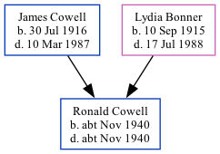

Ronald J Cowell cNov 1940 - c1940 [ Home ] | [ Calendar ] | [ Surnames Index ] | [ Family History ]The child of James Cowell (an ironmonger's shop's assistant) and Lydia Bonner , Ronald Cowell , a cousin on the mother's side of Nigel Horne , was born in Eton, Buckinghamshire, England c. Nov 19401,2,3 .
He died on the same day3,4 (oct/Nov/Dec).
Parents James Sidney was born on Jul 30, 1916Lydia Florence was born on Sep 10, 1915Citations England & Wales births 1837-2006 - Findmypast England & Wales, Birth Index: 1916-2005 Online publication - Provo, UT, USA: The Generations Network, Inc., 2008.Original data - General Register Office. England and Wales Civil Registration Indexes. London, England: General Register Office. © Crown copyright. Published by permission of the Cont England & Wales, Death Index: 1984-2005 Online publication - Provo, UT, USA: The Generations Network, Inc., 2007.Original data - General Register Office. England and Wales Civil Registration Indexes. London, England: General Register Office. © Crown copyright. Published by permission of the Cont England & Wales deaths 1837-2007 - Findmypast Media England & Wales deaths 1837-2007 Transcription - BMD-D-1940-4-AZ-000220-098 England & Wales births 1837-2006 - BMD/B/1940/4/AZ/000210/148 Family Tree Map
Generated by Ged2Site . Last updated on Jul 20, 2025